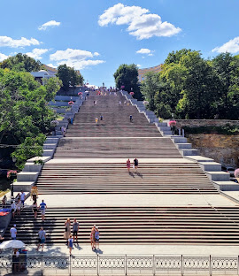

Визначні пам'ятки

Оперний театр, вулиця Дерибасівська та Приморський бульвар — візитні картки цього чудового міста.
Кухня та гастрономія
Форшмак, смажена цаца та свіжі морепродукти з Привозу. Одеська кухня поєднує традиції багатьох народів.
Культура та традиції
Одеса славиться своїм гумором, відкритими людьми та унікальним діалектом, який не сплутаєш ні з чим іншим.
Особисті історії
Зустрічати світанок на пляжі Ланжерон, слухаючи шум хвиль, було одним із найщасливіших моментів нашої подорожі. Це місто вчить радіти простим речам.